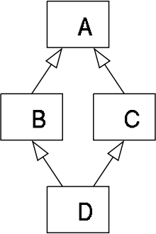

_M_ethod Resolution Order or ‘MRO’ in short, denotes the way a programming language resolves a method or attribute. This post looks into how Method Resolution Order works, using Python.
Python supports classes inheriting from other classes. The class being inherited is called the Parent/Super class, while the class that inherits is called the Child/Sub class.
While inheriting from another class, the interpreter needs a way to resolve the methods that are being called via an instance. Hence a method resolution order is needed.
Example 0:
[code language=“python”]
class A(object): def my_func(self): print(“Doing this in class A”)
class B(A): def my_func(self): print(“Doing this in class B”)
my_instance = B() my_instance.my_func() [/code]
Structure:
- We’ve two classes,
class Aandclass B. - Instantiate
class Basmy_instance. - Call the
my_func()method through themy_instanceinstance.
Where is the method fetched from? From class B or class A?
How does the code work?
This should be pretty obvious, the answer would be class B. But why is it being called from class B and not from class A?
Answer : The Method Resolution Order [MRO].
To understand this in depth, let’s check another example:
Example 1:
[code language=“python”] class A(object): def my_func(self): print(“Doing this in Class A”)
class B(A): pass
class C(object): def my_func(self): print(“Doing this in Class C”)
class D(B, C): pass
my_instance = D() my_instance.my_func() [/code]
Structure:
- Four classes, class
A,B,C, andD. - Class
Dinherits from bothBandC - Class
Binherits fromA. - Class
AandCdoesn’t inherit from any super classes, but from theobjectbase class due to being new-style classes. - Class
Aand classCboth have a method/function namedmy_func(). - Class
Dis instantiated throughmy_instance
If we were to call the method my_func() through the my_instance() instance, which class would it be called from? Would it be from class A or class C?
How does the code work?
This won’t be as obvious as Example 0.
- The instance
my_instance()is created from classD. - Since class
Dinherits from both classBandC, the python interpreter searches for the methodmy_func()in both of these classes. - The intrepreter finds that class
Binherits from classA, and classCdoesn’t have any super classes other than the defaultobjectclass. - Class
Aand classCboth has the method namedmy_func(), and hence has to be called from one of these. - Python follows a depth-first lookup order and hence ends up calling the method from class A.
Following the depth-first Method Resolution Order, the lookup would be in the order :
Class D -> Class B -> Class C
Let’s check another example, which can be a bit more complex.
Example 2:
[code language=“python”] class A(object): def my_func(self): print(“Doing this in A”)
class B(A): pass
class C(A): def my_func(self): print(“doing this in C”)
class D(B, C): pass
my_instance = D() my_instance.my_func() [/code]
Structure:
- Four classes, class
A,B,C, andD - Class
Dinherits from bothBandC - Class
Binherits from classA. - Class
Cinherits from classA. - Class
Ainherits from the default base classobject.
This sort of inheritance is called the Diamond Inheritance or the Deadly Diamond of death and looks like the following:

Image courtsey : Wikipedia
How does the code work?
Following the depth-first Method Resolution Order, the lookup would be in the order :
Class D -> Class B -> Class A -> Class C -> Class A
In order to avoid ambiguity while doing a lookup for a method where multiple classes are inherited and involved, the MRO lookup has changed slightly from Python 2.3 onwards.
It still goes for the depth-first order, but if the occurrence of a class happens multiple times in the MRO path, it removes the initial occurrence and keeps the latter.
Hence, the look up order in Example 2 becomes:
Class D -> Class B -> Class C -> Class A.
NOTE: Python provides a method for a class to lookup the Method Resolution Order. Let’s recheck Example 2 using that.
[code language=“python”] class A(object): def my_func(self): print(“Calling this from A”)
class B(A): pass
class C(A): def my_func(self): print("\nCalling this from C")
class D(B, C): pass
my_instance = D() my_instance.my_func()
print("\nPrint the Method Resolution Order") print(D.mro()) print(D.__bases__) [/code] This should print:
[code language=“python”] # python /tmp/Example-2.py
Calling this from C
Print the Method Resolution Order class ‘__main__.D’, class ‘__main__.B’, class ‘__main__.C’, class ‘__main__.A’, type ‘object’
(, ) [/code]
Takeaway:
- Python follows a depth-first order for resolving methods and attributes.
- In case of multiple inheritances where the methods happen to occur more than once, python omits the first occurrence of a class in the Method Resolution Order.
- The
<class>.mro()methods helps to understand the Medthod Resolution Order. - The `__bases__` and `__base__` magic methods help to understand the Base/Parent classes of a Sub/Child class.